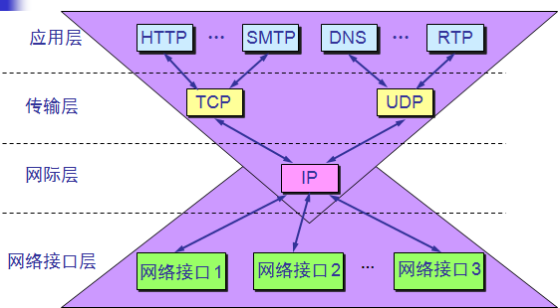
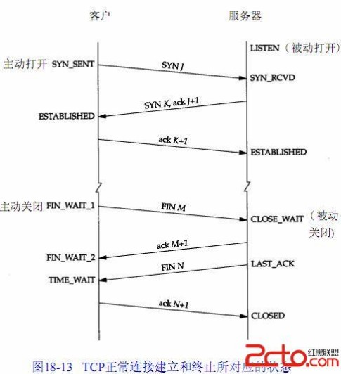

日常开发，测试过程中，特别是在压力测试过程中，用netstat -nat查看，发现客户端出现大量SYN_SENT状态, 服务端出现大量SYN_RCVD状态连接,下面我们一起看下
- 为什么会有这些状态？
- 出现这些状态原因是什么？
TCP协议模型

IP和端口
解决了文章最开始提到的定位的问题。
IP在互联网中能唯一标识一台计算机，是每一台计算机的唯一标识（身份证）；网络编程是和远程计算机的通信，所以必须先能定位到远程计算机；IP帮助解决此问题；一台计算机中可能有很多进程，具体和哪一个进程进行通信，这就得靠端口来识别；
TCP和UDP协议
- TCP是Tranfer Control Protocol的简称，是一种面向连接的保证可靠传输的协议。通过TCP协议传输，得到的是一个顺序的无差错的数据流。发送方和接收方的成对的两个socket之间必须建立连接，以便在TCP协议的基础上进行通信，当一个socket（通常都是server socket）等待建立连接时，另一个socket可以要求进行连接，一旦这两个socket连接起来，它们就可以进行双向数据目的地的时间以及内容的正确性都是不能被保证的传输，双方都可以进行发送或接收操作。
- UDP是User Datagram Protocol的简称，是一种无连接的协议，每个数据报都是一个独立的信息，包括完整的源地址或目的地址，它在网络上以任何可能的路径传往目的地，因此能否到达目的地，到达。
- 比较：
- UDP：
- 每个数据报中都给出了完整的地址信息，因此无需要建立发送方和接收方的连接。
- UDP传输数据时是有大小限制的，每个被传输的数据报必须限定在64KB之内。
- UDP是一个不可靠的协议，发送方所发送的数据报并不一定以相同的次序到达接收方
- TCP：
- 面向连接的协议，在socket之间进行数据传输之前必然要建立连接，所以在TCP中需要连接时间。
- TCP传输数据大小限制，一旦连接建立起来，双方的socket就可以按统一的格式传输大的数据。
- TCP是一个可靠的协议，它确保接收方完全正确地获取发送方所发送的全部数据。
- 应用数据分割成TCP认为最适合发送的数据块。这部分是通过“MSS”（最大数据包长度）选项来控制的，通常这种机制也被称为一种协商机制，MSS规定了TCP传往另一端的最大数据块的长度。值得注意的是，MSS只能出现在SYN报文段中，若一方不接收来自另一方的MSS值，则MSS就定为536字节。一般来讲，在不出现分段的情况下，MSS值还是越大越好，这样可以提高网络的利用率。
- 重传机制。设置定时器，等待确认包。
- 对首部和数据进行校验。
- TCP对收到的数据进行排序，然后交给应用层。
- TCP的接收端丢弃重复的数据。
- TCP还提供流量控制。（通过每一端声明的窗口大小来提供的）
- UDP：
TCP状态机

TCP状态图
连接建立
- 第一次握手：主机A发送位码为syn＝1,随机产生seq number=1234567的数据包到服务器，主机B由SYN=1知道，A要求建立联机；
- 第二次握手：主机B收到请求后要确认联机信息，向A发送ack number=(主机A的seq+1),syn=1,ack=1,随机产生seq=7654321的包
- 第三次握手：主机A收到后检查ack number是否正确，即第一次发送的seq number+1,以及位码ack是否为1，若正确，主机A会再发送ack number=(主机B的seq+1),ack=1，主机B收到后确认seq值与ack=1则连接建立成功。
- 完成三次握手，主机A与主机B开始传送数据。
连接关闭, 由于TCP连接是全双工的，因此每个方向都必须单独进行关闭。这个原则是当一方完成它的数据发送任务后就能发送一个FIN来终止这个方向的连接。收到一个 FIN只意味着这一方向上没有数据流动，一个TCP连接在收到一个FIN后仍能发送数据。首先进行关闭的一方将执行主动关闭，而另一方执行被动关闭。
- 客户端A发送一个FIN，用来关闭客户A到服务器B的数据传送（报文段4）。
- 服务器B收到这个FIN，它发回一个ACK，确认序号为收到的序号加1（报文段5）。和SYN一样，一个FIN将占用一个序号。
- 服务器B关闭与客户端A的连接，发送一个FIN给客户端A（报文段6）。
- 客户端A发回ACK报文确认，并将确认序号设置为收到序号加1（报文段7）。
附上另一张图：
!()[3.png]
TCP状态
CLOSED： 表示初始状态。
LISTEN： 表示服务器端的某个SOCKET处于监听状态，可以接受连接了。
SYN_RCVD： 这个状态表示接受到了SYN报文，在正常情况下，这个状态是服务器端的SOCKET在建立TCP连接时的三次握手会话过程中的一个中间状态，很短暂，基本 上用netstat你是很难看到这种状态的，除非你特意写了一个客户端测试程序，故意将三次TCP握手过程中最后一个ACK报文不予发送。因此这种状态 时，当收到客户端的ACK报文后，它会进入到ESTABLISHED状态。
SYN_SENT： 这个状态与SYN_RCVD遥想呼应，当客户端SOCKET执行CONNECT连接时，它首先发送SYN报文，因此也随即它会进入到了SYN_SENT状态，并等待服务端的发送三次握手中的第2个报文。SYN_SENT状态表示客户端已发送SYN报文。
ESTABLISHED：表示连接已经建立。
FIN_WAIT_1： 这个状态要好好解释一下，其实FIN_WAIT_1和FIN_WAIT_2状态的真正含义都是表示等待对方的FIN报文。而这两种状态的区别 是：FIN_WAIT_1状态实际上是当SOCKET在ESTABLISHED状态时，它想主动关闭连接，向对方发送了FIN报文，此时该SOCKET即 进入到FIN_WAIT_1状态。而当对方回应ACK报文后，则进入到FIN_WAIT_2状态，当然在实际的正常情况下，无论对方何种情况下，都应该马 上回应ACK报文，所以FIN_WAIT_1状态一般是比较难见到的，而FIN_WAIT_2状态还有时常常可以用netstat看到。
FIN_WAIT_2：上面已经详细解释了这种状态，实际上FIN_WAIT_2状态下的SOCKET，表示半连接，也即有一方要求close连接，但另外还告诉对方，我暂时还有点数据需要传送给你，稍后再关闭连接。
TIME_WAIT： 表示收到了对方的FIN报文，并发送出了ACK报文，就等2MSL后即可回到CLOSED可用状态了。如果FIN_WAIT_1状态下，收到了对方同时带FIN标志和ACK标志的报文时，可以直接进入到TIME_WAIT状态，而无须经过FIN_WAIT_2状态。
CLOSE_WAIT： 这种状态的含义其实是表示在等待关闭。怎么理解呢？当对方close一个SOCKET后发送FIN报文给自己，你系统毫无疑问地会回应一个ACK报文给对 方，此时则进入到CLOSE_WAIT状态。接下来呢，实际上你真正需要考虑的事情是察看你是否还有数据发送给对方，如果没有的话，那么你也就可以 close这个SOCKET，发送FIN报文给对方，也即关闭连接。所以你在CLOSE_WAIT状态下，需要完成的事情是等待你去关闭连接。
LAST_ACK： 这个状态还是比较容易好理解的，它是被动关闭一方在发送FIN报文后，最后等待对方的ACK报文。当收到ACK报文后，也即可以进入到CLOSED可用状态了。
CLOSING： 这种状态比较特殊，实际情况中应该是很少见，属于一种比较罕见的例外状态。正常情况下，当你发送FIN报文后，按理来说是应该先收到（或同时收到）对方的 ACK报文，再收到对方的FIN报文。但是CLOSING状态表示你发送FIN报文后，并没有收到对方的ACK报文，反而却也收到了对方的FIN报文。什 么情况下会出现此种情况呢？其实细想一下，也不难得出结论：那就是如果双方几乎在同时close一个SOCKET的话，那么就出现了双方同时发送FIN报 文的情况，也即会出现CLOSING状态，表示双方都正在关闭SOCKET连接
通讯类型
- 短连接
- 连接 -> 数据传输 -> 关闭连接
- 长连接，要求长连接在没有数据通信时，定时发送数据包，以维持连接状态，短连接在没有数据传输时直接关闭就行了 长连接需要心跳包维护连接状态
- 连接->数据传输->保持连接->数据传输->保持连接-> …… ->关闭连接
什么时候用长连接，短连接？
长连接主要用于在少数客户端与服务端的频繁通信，因为这时候如果用短连接频繁通信常会发生Socket出错，并且频繁创建Socket连接也是对资源的浪费。
但是对于服务端来说，长连接也会耗费一定的资源，需要专门的线程来负责维护连接状态。
同步通讯–报文发送和接收是同步进行，既报文发送后等待接收返回报文。
- 发送数据之后等待接收返回数据。同步方式一般需要考虑超时问题，即报文发上去后不能无限等待，需要设定超时时间，超过该时间发送方不再等待读返回报文，直接通知超时返回。
异步通讯–报文发送和接收是分开的，相互独立的，互不影响。这种方式又分两种情况：
- 异步双工：接收和发送在同一个程序中，有两个不同的子进程分别负责发送和接收
- 异步单工：接收和发送是用两个不同的程序来完成。
日常应用
我们通过了解TCP各个状态，可以排除和定位网络或系统故障时大有帮助。
linux查看tcp的状态命令：
netstat -nat查看TCP各个状态的数量lsof -i:port可以检测到打开套接字的状况tcpdump -iany tcp port 9000对tcp端口为9000的进行抓包
故障排查
通过端口监听判断服务启动是否正常netstat –an| grep 8080
- 例如：提供www服务默认开的是80端口，提供ftp服务默认的端口为21，当提供的服务没有被连接时就处于LISTENING状态。FTP服务启动后首先处于侦听（LISTENING）状态。处于侦听LISTENING状态时，该端口是开放的，等待连接
- 客户端出现大量SYN_SENT状态
- 当请求连接时客户端首先要发送同步信号给要访问的机器，此时状态为SYN_SENT，如果连接成功了就变为ESTABLISHED，正常情况下SYN_SENT状态非常短暂
- 如果发现有很多SYN_SENT出现，那一般有这么几种情况，一是你要访问的服务器网络不好，二是服务端无法建立连接返回ack
- 服务端出现大量SYN_RCVD状态连接
- 同理SYN_RCVD状态也是非常短暂的，如果大量出现说明有可能遭到了攻击，或者是客户端网络限制
- 大量的CLOSE-WAIT状态
- 被动关闭(passive close)端TCP接到FIN后，就发出ACK以回应FIN请求(它的接收也作为文件结束符传递给上层应用程序),并进CLOSE_WAIT.如果连接不关闭CLOSE_WAIT持续时间会非常长，如果长时间积累，可能会导致系统资源耗尽
- 发现系统存在大量TIME_WAIT状态的连接,可以修改内核参数解决，修改TIME_WAIT持续时间